Prerrequisitos
- Descargar Ubuntu Server 12.04 ó 13.04
desde la web
de Ubuntu.
- Instalar Ubuntu Server de 32 o 64 bits
(preferiblemente sin escritorio alguno).
- Configurar la conexión de red / internet.
- Iniciar sesión de usuario en terminal para comenzar pasos
de instalación.
Instalación
- Descargar script: Desde esta web o bien desde consola en el ordenador destino.
$ wget -O xfce-installer.tar.gz
https://github.com/cesar-rgon/xfce-installer/archive/master.tar.gz
- Descomprimir script en carpeta "home"
$ tar -xvf xfce-installer*.tar.gz
$ rm xfce-installer*.tar.gz
- Ejecutar script
$ cd xfce-installer*
$ sudo ./install.sh
- Introducir nombre de usuario (no root) del sistema:
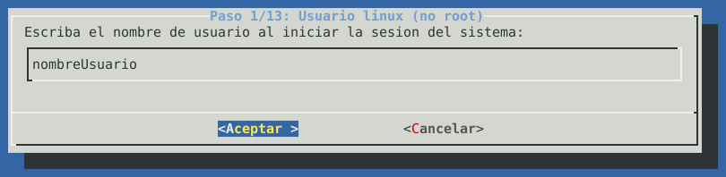
- Seleccionar las características del ordenador que
procedan:
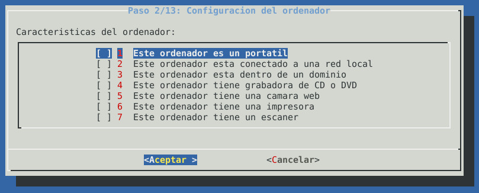
- Especificar si se desea instalar Lightdm
(autenticación de usuario previa a lanzar el escritorio):
Recomendado: Opción 1 ó 2.
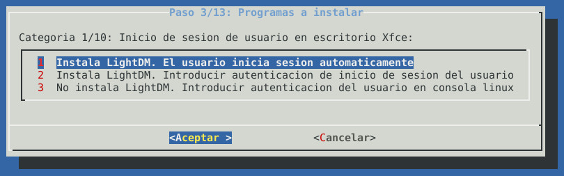
- Instalar utilidad file-roller
y compresores rar y 7zip.
Recomendado: Dejar seleccionados
todos ellos.
- Instalar algunas aplicaciones orientadas al desarrollo y
programación.
Recomendado: Instalar OpenJDK para
disponer del entorno de ejecución Java.
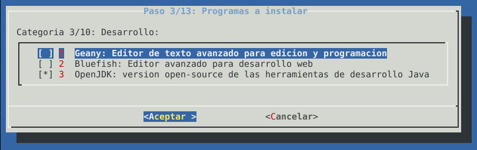
- Seleccionar aplicaciones de descargas necesarias:
Hay aplicaciones que tienen dos alternativas de instalación:
1. Aplicación estándar: Ejemplos: aMule,
Deluge,
Qbittorrent,
jDownloader.
Son aplicaciones que descargan sólo
cuando están ejecutadas en entorno gráfico. 2. Demonio: Ejemplos: aMule daemon, Deluged,
Qbittorrent Nox, uTorrent Server, pyLoad.
Son aplicaciones que se ejecutan
desde consola (en segundo plano) y se gestionan sus descargas
mediante aplicaciones clientes ya sea por navegador Web o por
entorno GUI. Recomendado: Según necesidades del usuario.
- Seleccionar utilidades para el escritorio.
Recomendado: Dejar opciones seleccionadas por defecto.
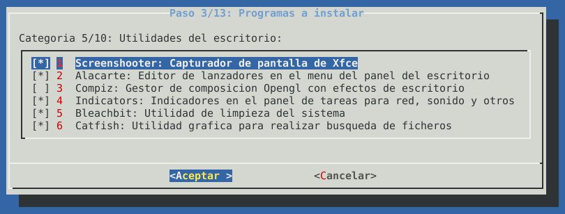
- Seleccionar instalación de plataforma de juegos Steam.
Recomendado: Según necesidades del usuario.
- Aplicaciones multimedia a instalar.
Recomendado:
Dejar opciones por defecto.
- Aplicaciones de ofimática y oficina.
Recomendado:
Instalar sólo una suite ofimática. Es decir, o bien LibreOffice
(que tiene más funcionalidades) o bien Abiword y Gnumeric.
Pero no todas ellas.
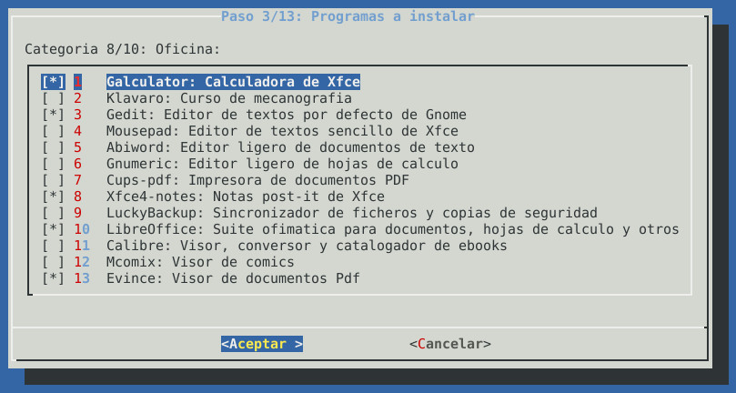
- Herramientas y utilidades del sistema.
Recomendado: Dejar seleccionadas opciones por defecto.

- Utilidades que comunicación y acceso a través de
internet.
Recomendado: Seleccionar según necesidades del
usuario.
- Indicar acciones a realizar después de la instalación.
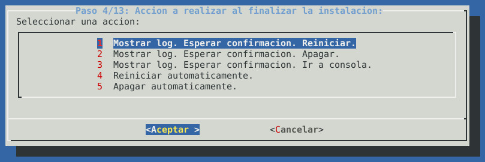
- Resumen de la instalación que se va a efectuar.
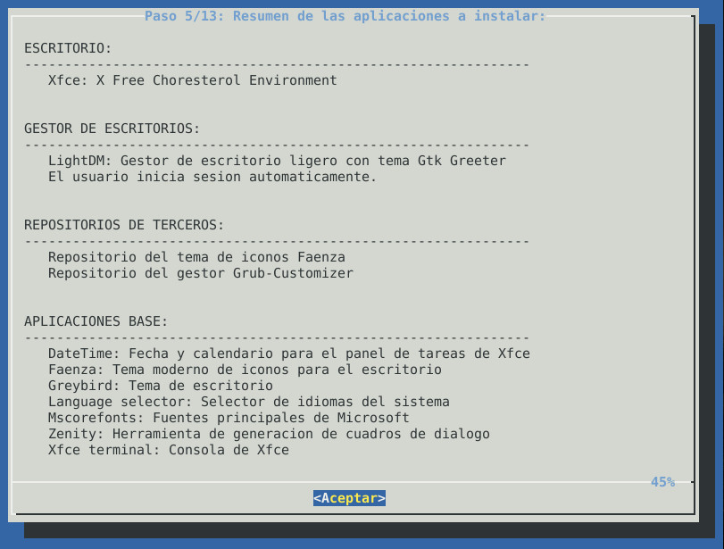
- Aceptar los derechos de instalación de las fuentes
Truetype de Microsoft
- El resto de la instalación se realizará de forma
desatentida.
- Descargar script: Desde esta web o bien desde consola en el ordenador destino.
$ wget -O xfce-installer.tar.gz https://github.com/cesar-rgon/xfce-installer/archive/master.tar.gz - Descomprimir script en carpeta "home"
$ tar -xvf xfce-installer*.tar.gz $ rm xfce-installer*.tar.gz - Ejecutar script
$ cd xfce-installer* $ sudo ./install.sh - Introducir nombre de usuario (no root) del sistema:
- Seleccionar las características del ordenador que procedan:
- Especificar si se desea instalar Lightdm
(autenticación de usuario previa a lanzar el escritorio):
Recomendado: Opción 1 ó 2. - Instalar utilidad file-roller
y compresores rar y 7zip.
Recomendado: Dejar seleccionados todos ellos. - Instalar algunas aplicaciones orientadas al desarrollo y
programación.
Recomendado: Instalar OpenJDK para disponer del entorno de ejecución Java. - Seleccionar aplicaciones de descargas necesarias:
Hay aplicaciones que tienen dos alternativas de instalación:
1. Aplicación estándar: Ejemplos: aMule, Deluge, Qbittorrent, jDownloader.Son aplicaciones que descargan sólo cuando están ejecutadas en entorno gráfico.2. Demonio: Ejemplos: aMule daemon, Deluged, Qbittorrent Nox, uTorrent Server, pyLoad.Son aplicaciones que se ejecutan desde consola (en segundo plano) y se gestionan sus descargas mediante aplicaciones clientes ya sea por navegador Web o por entorno GUI.Recomendado: Según necesidades del usuario. - Seleccionar utilidades para el escritorio.
Recomendado: Dejar opciones seleccionadas por defecto. - Seleccionar instalación de plataforma de juegos Steam.
Recomendado: Según necesidades del usuario. - Aplicaciones multimedia a instalar.
Recomendado: Dejar opciones por defecto. - Aplicaciones de ofimática y oficina.
Recomendado: Instalar sólo una suite ofimática. Es decir, o bien LibreOffice (que tiene más funcionalidades) o bien Abiword y Gnumeric. Pero no todas ellas. - Herramientas y utilidades del sistema.
Recomendado: Dejar seleccionadas opciones por defecto. - Utilidades que comunicación y acceso a través de
internet.
Recomendado: Seleccionar según necesidades del usuario. - Indicar acciones a realizar después de la instalación.
- Resumen de la instalación que se va a efectuar.
- Aceptar los derechos de instalación de las fuentes Truetype de Microsoft
- El resto de la instalación se realizará de forma desatentida.
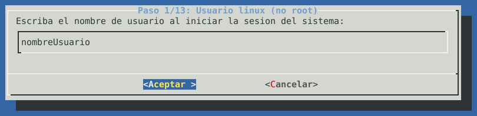
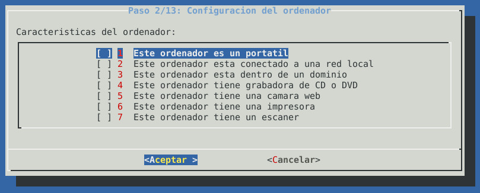
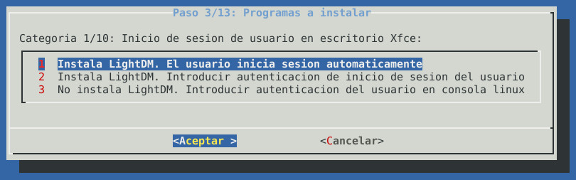
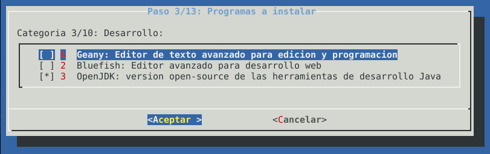
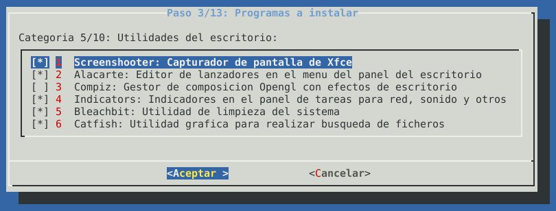
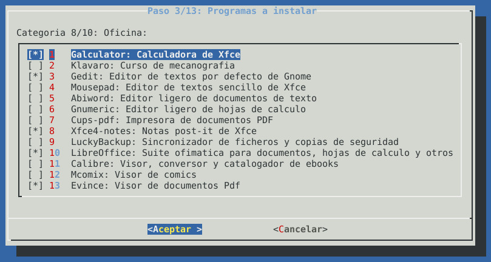
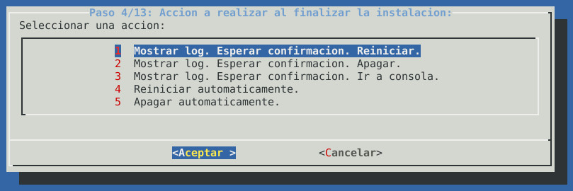
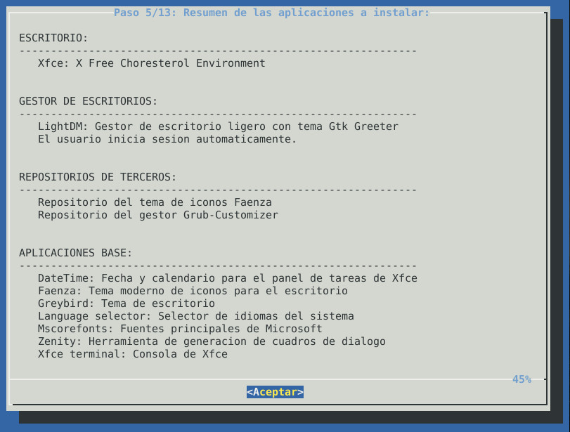